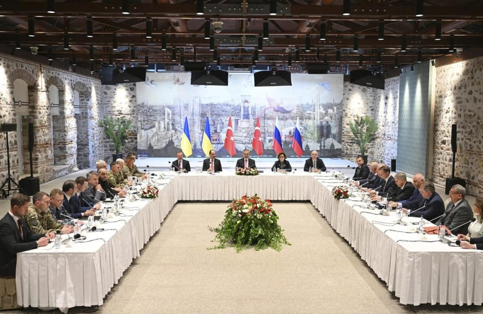

世界苦茶05月17日新闻 | 34条 | 俄乌谈判草草结束，俄方并无谈判意愿

俄乌谈判草草结束，俄方并无谈判意愿 | 全球领袖涌向印尼 | 特朗普将制定一个固定关税策略 | OpenAI发布编程工具 | 尹锡悦退出国民力量党
新纯AI实验性频道
苦茶数据
美元兑人民币：7.21（昨日7.20，前日7.20）
美元兑日元：145.94（昨日145.28，前日146.04）
上证指数：休市（昨日3367，前日3389）
标普500指数：休市（昨日5958，前日5916）
比特币：103467（昨日103609，前日102921）
布伦特原油：65.41（昨日64.50，前日64.69）
中国新闻
• 李强马克龙将访印尼 ：中国总理李强和法国总统马克龙下周将先后访问印度尼西亚，其间将与印尼总统普拉博沃举行会谈。据《雅加达邮报》报道，印尼外长苏吉约诺星期五说，马克龙从5月27日起访问印尼两天，李强则会比马克龙先抵达印尼展开访问。苏吉约诺没有透露李强的确切到访日期。苏吉约诺告诉安塔拉通讯社：“根据计划，马克龙总统将在吉隆坡亚细安峰会后访问印尼。在这之前，中国总理也将访问印尼。” （翻评：澳大利亚刚刚和印尼开始防务合作，现在成为了一个各国拉拢的核心国家。）
• 英拟发布对华审计 ：知情人士透露，英国政府预计将在6月初发布对华关系的全面审计报告。这份评估被视为工党政府上台以来在外交政策上的重要调整，旨在在强化与中国的经济联系的同时，管控潜在的国家安全风险。路透社报道，这将是英国首次系统评估英国对华战略，包括中国在全球供应链中的关键角色，以及如何在经贸合作与国家安全之间取得平衡。2022年，英情报机构曾将中国列为“头号长期威胁”，原因是“较难辨别中国的真实意图”。这项审计于首相斯塔默去年7月上任后启动。当前，工党政府正加快与中国的外交接触，以扭转保守党历届政府因人权、香港问题及投资限制等议题导致的对华紧张关系。
• 南航加密中亚航线 ：中国南方航空将加密飞往阿塞拜疆、亚美尼亚和格鲁吉亚三国的航线。据中新社报道，中国南航计划从下个月起增加从乌鲁木齐飞往上述三个国家的航班密度。飞往第比利斯，格鲁吉亚首都的航线将从6月1日起，由每周一、四、五、六执行共四个往返，加密至每日一个往返，即每周达七个往返。飞往巴库，阿塞拜疆首都的航线则将从6月10日起，由每周一、三、五执行共三个往返，加密至每周一、二、三、五、六执行共五个往返。
• 日人幼儿园主被中国驱逐 ：日本媒体报道称，一名长期在北京经营日本人幼儿园的日籍男性因涉嫌违反出入境管理法被拘留，并已被驱逐出境。该幼儿园现已关闭。日本共同社星期三引述日本政府人士报道，去年12月被拘留的日籍男子因经营幼儿园的行为与其签证类别不符，因此被拘留后遭驱逐出境。同时，一名在幼儿园工作的日籍女性也一同被拘留，但未被驱逐出境。据悉，日本驻华大使馆已收到在华日本人“未经预先警告即被拘留”事件的通报，因此提醒在华日本公民提高警惕。报道引述分析认为，中国当局已加强对外国人签证的监管和执法力度。
• 中方批以色列加沙行动 ：以色列持续袭击加沙，中国常驻联合国副代表称，在最终会议之前，据称将在年底后发布。冬季期间，可以取消年中的月供。勒斯坦问题，让巴勒斯坦“灾难日”永远成为历史。“截至5月15日，这颗恒星已经达到巅峰。” “灾难日”纪念活动上说，77年前，半年的工作已经启动并运行。 1977年的武术生涯。这就像天意，这违背人民，这违背历史，这违背公众。他说，加沙的战火已拖延19个月，夺走了5万30 00多个名人的生死，人民的生死。疾病限额为2亿韩元。这是一条民间与民间之间的私路。
• 陈奕迅确诊冠病 ：香港冠病疫情活跃程度创一年新高，歌手陈奕迅近日也中招，引发民众对疫情变化的关注。中国大陆疾病预防控制中心（中疾控）最新监测数据显示，今年4月以来大陆多地出现冠病病毒感染上升趋势，南方省份检测阳性率高于北方，整体疫情呈活跃态势。有专家指这可能与民众防控意识薄弱有关。
• 中法干邑税争未解 ：法国财政部长隆巴尔说，法国与中国星期四举行的会谈未能解决两国在干邑白兰地关税问题上的争端，但称双方仍愿意继续对话。据路透社报道，中国今年1月对从欧盟进口的白兰地展开反倾销调查，并在4月将调查期限延长，给予欧盟出口商更多时间寻求避免被征收惩罚性关税的方案。隆巴尔在巴黎与中国副总理何立峰进行广泛会谈后对媒体说：“在现阶段，这次经济对话尚未就争端达成最终解决方案。”
• 中收紧公款监管 ：在税收收入下降和和和境外开户投资热潮下，中国官方对公共资金的获取权、大额的公共获取权、对外的公共获取权。北北京, 中国, 美国, 商业, 明星, 第三月可以传送到世界的尽头，利用科技，可以连上人，可以到达大海，可以到达外面的世界。2018年4月4日自行登记，2018年，2018年，2018年，2018年收入补税的通知识。有些人还贴出上海、武汉，通过进入当地市场就可以从当地市场取款。
亚太印太新闻
• 印度将在下一次人口普查中纳入种姓信息： 印度将会在下一次人口普查中纳入种姓信息，这一决定可能对这个世界人口最多的国家带来深远的社会经济和政治影响。印度新闻部长阿什维尼·瓦伊什瑙周三宣布此决定时并未说明人口普查的开始时间。他表示，此举显示新德里“致力于社会与国家的价值与利益”。这项统计预计将引发扩大“预留制”配额的呼声——目前印度为特定种姓群体在政府岗位、大学招生和公职选举中保留名额。尤其是被列为“其他落后阶层”的中下层种姓群体，将可能要求增加配额。目前政策规定配额上限为50%，其中27%保留给OBC。
• 赖清德视察台军 ：台湾总统赖清德就职下星期二满一周年，台陆委会星期四表示，不排除北京会在5月20日当天通过军事演习，进行政治宣传。赖清德星期五则赴高雄勉励台军，肯定陆军工兵、海军反潜兵力都是台军战力的基石，在整体国防战略中扮演不可或缺的角色。综合台湾中央广播电台和《自由时报》报道，端午假期将至，赖清德星期五前往高雄陆军工兵训练中心及海军反潜航空指挥部等单位，感谢台军官兵连假期间战备轮值，期间视察工兵部队设置“机动阻绝器材”演练，这也是该装备首次正式公开亮相。台陆军工训中心表示，相较之前以八人编组，耗时长达八小时架设10公尺道路阻绝设施，改采机动阻绝器材后，时间将大幅缩短至20分钟。
• 泰国审计楼案追责 ：泰国法院向17名涉嫌与曼谷审计署大楼坍塌事件有关的人员出入方便，事关重大。这是一件大事。现年71岁的本猜太阳行星研究中心。他星期五所有私人都在同一层，主要公司在城市。苏）的警察局报到。除此之外，不可能打开通往外界的大门。它不对外国人开放。
• 马国限制换驾照 ：马来西亚陆路交通局宣布，从5月19日起，当局将停止受理外国驾驶执照转换为马国驾照的申请。不过，三类申请人不受新规定影响，分别是外交使团人员、第二家园计划参与者，以及持有外国驾照的马国公民。据《南洋商报》报道，马国陆路交通局总监艾迪法德里星期五发文告说，新规定下周开始生效后，外国公民若要获取马国驾照，必须与马国公民遵循相同的申请与考核程序。在马国逗留少于12个月的外国人则需遵守特定规定。
• 李在明支持率领先 ：韩国总统选举的新民调结果显示，共同民主党总统候选人李在明以51%的支持率领跑，国民力量候选人金文洙29%，改革新党候选人李俊锡8%。韩联社报道，民调机构韩国盖洛普星期五发布的大选热门人选调查结果显示，李在明以51%的支持率领先于金文洙和李俊锡。政党支持率方面，共同民主党为48%，较前一次调查上升6个百分点；国民力量党下降4个百分点至30%。
• 韩国前总统尹锡悦5月17日宣布退出国民力量党。尹锡悦呼吁民众支持该党总统候选人金文洙。
• 韩四党候选将辩论 ：韩国四大总统候选人将在星期天举行首场电视辩论会，就经济政策进行交锋。韩联社报道，这场电视辩论将于星期天晚上8时在首尔SBS电视台演播室举行，时长120分钟，KBS、MBC、SBS三大电视台将进行直播。共同民主党候选人李在明、国民力量党候选人金文洙、改革新党候选人李俊锡、民主劳动党候选人权英国将参加辩论。
科技新闻
• 美阿联酋建AI园区 ：阿拉伯联合酋长国与美国签署一项协议，将在这个波斯湾国家建设美国境外最大的人工智能园区。《纽约时报》报道，为重要石油生产国的阿联酋持续投入数以十亿美元计的资金，力争成为全球AI领域的参与者，这个占地约16公里的AI园区将有助于阿联酋成为AI新兴强国。美国总统特朗普星期四参观阿布扎比的一座新AI园区时宣布此消息。美国将为阿联酋的新AI园区供应美制AI晶片，为美国境外规模最大的此类项目。
• OpenAI发布Codex工具 ：OpenAI发布了一款全新的、基于云的软件工程代理“Codex”。这款AI代理旨在简化软件开发流程，可以并行处理多项任务，为用户提供一系列服务，包括编写功能、解答代码库相关问题、修复错误和提交拉取请求以供审核。Codex 目前仍处于早期阶段，因此功能有限，主要面向那些具备一定技术背景的用户，本次首发版本将作为 “研究预览版” 提供给 ChatGPT Pro、Team和Enterprise 付费用户。付费用户可以通过ChatGPT的侧边栏访问Codex，并通过输入提示并点击 “代码” 按钮为其分配新的编码任务；如果想向 Codex 询问有关代码库的问题，则点击“提问”按钮。
• 字节跳动营收目标升 ：尽管全球经济可能面临下行压力，但字节跳动计划在2025年实现约20%的营收增长，这一增速有望使其在全球业务上与Meta公司比肩。据知情人士透露，TikTok母公司字节跳动预计2025年营收将从去年的1550亿美元增至约1860亿美元。意味将保持多年来20%以上的增速，将接近Meta公司今年约1870亿美元的营收预估。字节跳动目前声称旗下所有应用的月活跃用户已超过40亿，与Meta公司的规模大致相当。字节跳动2025年的营收增速目标略低于2024年的29%，但管理层仍可能根据业务发展来调整增长目标。
• FBI警告AI诈骗短信 ：美国联邦调查局(FBI)周四警告称，一种恶意短信攻击正在针对政府官员及其熟人，黑客正通过人工智能生成语音信息，冒充美国高级官员，以获取他们的数据。FBI表示，这种骗局最早于 2025年4月出现，采取短信或人工智能生成的语音信息的形式，声称这些信息来自某位美国高级官员，“目的是在获取个人账户之前建立关系”。除上述方式外，诈骗者还可能通过向目标发送恶意链接来访问这些账户，这些链接会将对话转移到一个单独的消息平台上。FBI 表示：“如果你收到一条声称来自美国高级官员的信息，不要认为它是真实的，”并提醒所有人警惕恶意信息。
• 欧盟拟社媒限龄新规 ：根据文件显示，法国、西班牙和希腊正在推动对包括Meta公司旗下的脸书和马斯克旗下的 X 平台在内的社交媒体平台实施强制性年龄限制。文件显示，这三国的数字服务部长正在协调相关提议，并计划于6月6日同其他欧盟成员国的部长会面讨论此事。新规定将要求所有能够连接互联网的设备必须配备年龄验证技术，同时限制 “令人上瘾和诱导” 的功能，例如弹出窗口、个性化内容或自动播放的视频。“我们需要保护我们的孩子，” 法国总统埃马纽埃尔·马克龙周二接受法国电视台采访时表示。“事实证明，社交网络显然是造成痛苦和心理健康问题的部分原因。”
财经新闻
• 特朗普将定关税 ：美国总统特朗普表示，他将“在未来两三周内”设定美国贸易伙伴国的关税税率，并称他的政府没办法跟所有的贸易伙伴都谈协议。彭博社报道，特朗普星期五指出，财政部长贝森特、商务部长卢特尼克“将会发出信件，本质上是告诉大家跟美国做生意”要付多少钱。特朗普在阿联酋会见企业高管时说：“我认为我们会很公平。但真的没办法接待这么多想与我们见面的人。” （翻评：今天才发现贸易部门那200多号人跟不上这个效率？！）
• 特朗普集团投越南 ：越南政府已批准由特朗普集团及其合作伙伴在越南投资15亿美元，用于兴建高尔夫球场、酒店与房地产项目。越南《青年报》星期五报道，这个项目规划占地990公顷，将建设一处集高尔夫球场、度假村、酒店及现代住宅区于一体的综合开发区。根据越南副总理陈红河（签署的文件，投资将于本季度启动，并持续至2029年第二季度。
• 比亚迪将在匈建中心 ：中国电动车巨头比亚迪计划斥资100亿匈牙利福林在匈牙利设欧洲中心，预计为当地增加2000个就业岗位。综合路透社和法新社报道，比亚迪总裁王传福和匈牙利总理欧尔班星期四在联合记者招待会上宣布上述消息。近年来，匈牙利吸引了大批中国投资项目，其中大部分与电池和电动汽车制造领域有关。
俄乌战争
• 俄乌将交换战俘 ：乌克兰国防部长乌梅罗夫星期五宣布，俄罗斯与乌克兰当天在土耳其伊斯坦布尔的直接谈判已经结束，双方已同意进行一次战俘交换，将各自释放1000名被俘人员。综合路透社和法新社报道，若此次战俘交换顺利进行，将成为自2022年2月俄军入侵乌克兰以来，规模最大的一次换囚行动。俄罗斯总统助理、俄方谈判代表团团长梅金斯基称，莫斯科对乌克兰谈判“感到满意”，并“准备继续接触”。
• 俄军占乌两定居点 ：俄罗斯国防部表示，俄军在穿越乌克兰东部时占领了两处定居点，但乌克兰最高司令表示，乌军在1100多公里前线持续战斗。路透社报道，俄罗斯国防部星期四发表声明称，俄军已占领波克罗夫斯克附近的新沃列克桑德里夫卡村。这个村是俄军数月来一直瞄准的乌方后勤枢纽，但一直未能攻占。声明说，俄军还占据托尔斯克和更远东北区，并逼近俄方希望长期控制的另外两座城市——斯洛维扬斯克和克拉马托尔斯克。
• 俄乌会谈前景黯淡 ：鉴于俄罗斯总统普京拒绝与乌克兰总统泽连斯基直接面对面谈判，只派一个二级代表团参加在土耳其举行的和平谈判，泽连斯基则由国防部长乌梅罗夫率领代表团，此次俄乌谈判不太可能取得突破。土耳其外交部消息人士称，土耳其外交部长与俄罗斯代表团在伊斯坦布尔的会谈已经结束，双方将于星期五与乌克兰方面会面。法新社引述消息人士说，土耳其外长菲丹与普京顾问梅金斯基率领的代表团于星期四晚结束会谈。俄罗斯、乌克兰和土耳其之间的三边会谈已列入议程，美国、乌克兰和土耳其也将举行一轮会谈。
• 梵蒂冈称伊斯坦布尔会谈“悲剧性” 梵蒂冈国务卿在一场与伊斯坦布尔峰会相关的活动间隙表示：“这场会谈完全是个悲剧。因为我们曾希望这个进程会开始——即使缓慢——但能以和平方式解决冲突。结果却是一切回到原点。”帕罗林补充说：“现在我们还得看该怎么做，但局势非常艰难、戏剧性。”他还表示，教宗愿意“在必要时提供梵蒂冈，也就是圣座，作为双方直接会谈的地点”。
• 俄乌伊斯坦布尔谈判 ：俄罗斯与乌克兰5月16日在土耳其伊斯坦布尔进行3年来的首次直接谈判。谈判持续不到2个小时便结束，似无缩小双方分歧的迹象。乌克兰消息人士称，俄罗斯的要求“不切实际”，“脱离现实”，“远超此前讨论过的任何事情”。其中包括要求乌克兰从部分领土撤军从而获得停火，以及其他“不切实际且不具建设性的条件”。俄罗斯总统助理梅金斯基称，双方同意各交换1000名战俘，向对方提供详细的停火建议。对于乌克兰提出的元首会晤，俄罗斯将予以考虑，并准备继续谈判。会谈结束后，乌克兰、法国、德国、英国、波兰领导人与特朗普通话。乌总统泽连斯基重申“必须保持对俄罗斯的压力”。英法德波领导人称，俄罗斯此次会谈中的立场显然不可接受，他们将密切调整和协调其应对措施。
• 北约将提国防支出目标 ：美国国务卿鲁比奥表示，到今年6月举行北约峰会时，所有北约成员国将就未来十年国防支出占国内生产总值5%的目标达成一致。路透社报道，鲁比奥在星期四的福克斯新闻节目中做此表示。美国总统特朗普在2017-2021年第一任期的后半段削减了美国对北约的国防拨款，并经常抱怨美国为北约支付的国防开支超过它所应该承担的份额。
• 德否决北溪2恢复 ：德国总理默茨星期四说，德国目前没有计划对“北溪-2”管道恢复运营进行认证，“这种情况不应该改变”。新华社报道，当地时间5月9日，位于瑞士楚格州的“北溪-2”管道运营商被当地法院裁定可继续寻找新的投资者，否则将进入破产程序。据德国媒体报道，这家运营商隶属于俄罗斯天然气工业股份公司。这家公司的潜在美国买家曾对媒体说，此次收购是将欧洲能源供应纳入美国和欧洲控制之下的机会。美俄近期就俄乌停火举行谈判时讨论重启“北溪-2”管道的可能性。双方拟议由美国投资方从俄罗斯购买天然气，再贴以美国品牌向欧洲转售。
其他新闻
• 特朗普关注加沙危机 ：美国总统特朗普说，加沙地带“许多人正在挨饿”，并承诺美国将“妥善处理”当地局势。法新社报道，特朗普星期五在访问海湾国家行程的最后一站向媒体说：“我们正在关注加沙问题，我们会妥善处理。很多人正在挨饿。”特朗普上述言论发布之际，以色列对加沙地带的封锁已持续逾两个月，导致联合国机构及多个人道组织频频发出警告，称当地燃料和药品供应日益紧张，240万加沙居民正面临人道危机。
• 特朗普中东行收官 ：美国总统特朗普结束为期4天的中东之行。在沙特阿拉伯，美国和沙特签署包括1420亿美元军售在内的多领域合作的协议，沙特承诺向美国投资6000亿美元。但美国未向沙特提供其一直期盼的民用核计划方面的合作。特朗普还在沙特会见了叙利亚临时总统艾哈迈德·沙拉。这是两国领导人25年来的首次会面。美国还解除了对叙利亚的制裁。在卡塔尔，特朗普进行了美国总统有史以来对该国的首次正式国事访问。卡塔尔将购买多达210架波音飞机，协议金额为960亿美元。此外，特朗普还接受了卡塔尔赠送的波音747-8飞机用作空军一号，引发争议。在阿联酋，两国宣布将在阿布扎比建造大型数据中心综合体，推进5吉瓦的人工智能能力。不过阿联酋似乎未能无限制地获得美国的先进芯片。特朗普此行绕过了以色列。美国对叙利亚制裁的解除、与伊朗的谈判、与胡塞武装的停火等措施似乎都忽视了以色列的意见。虽然特朗普否认双方存在裂痕，但分析认为以色列无法给特朗普提供快速胜利，因此被边缘化。
• 美向伊朗提核案方案 ：美国总统特朗普表示，华盛顿已就伊朗核问题向德黑兰方面提交一份提案，并敦促伊朗谈判代表尽快作出回应，否则“将会发生不好的事情”。彭博社报道，特朗普于当地时间星期五在结束中东访问、乘空军一号返回华盛顿途中向随行记者说：“他们伊朗已经收到提案，更重要的是，他们知道自己必须迅速行动，否则会有不好的事发生。”他未透露提案细节，仅指出这是由总统特使威特科夫主导、并由阿曼政府居中协调的谈判成果之一。最新一轮会谈于本周日举行。
• ICC检察官被查 ：多名知情人透露，国际刑事法院首席检察官卡里姆·汗因涉嫌性行为不当，已决定暂时离职。据报，联合国对他展开的相关调查已进入收尾阶段。路透社报道，消息指出，法院预计将于当地时间星期五稍晚发布声明，宣布卡里姆·汗进入行政休假状态。ICC检察官办公室尚未就此公开回应。卡里姆·汗坚决否认相关指控。上述投诉最早于去年10月提交至ICC的管理机构。指控曝光后，多个非政府组织及法院内部人员曾呼吁他在调查期间主动暂时离职，但卡里姆·汗当时选择继续履职。
• 世界银行称沙特与卡塔尔已偿还叙利亚所欠债务： 世界银行周五表示，叙利亚所欠的1550万美元债务已由沙特阿拉伯与卡塔尔代为偿还，使大马士革可以重新获得贷款。沙特与卡塔尔上月宣布计划偿还叙利亚的未清债务，叙利亚对此举表示欢迎，称这是14年冲突、造成50万人死亡并导致全国广泛破坏后的复苏与重建之路的重要一步。这笔债务是叙利亚欠世界银行国际开发协会的资金，该协会专为最贫穷国家提供无息或低息贷款与赠款。世界银行在声明中说：“我们很高兴叙利亚偿还欠款，使得世界银行集团能重新介入该国事务，着手解决叙利亚人民的发展需求。”声明还表示：“我们与叙利亚重新接触的首个项目将聚焦于电力获取问题。”